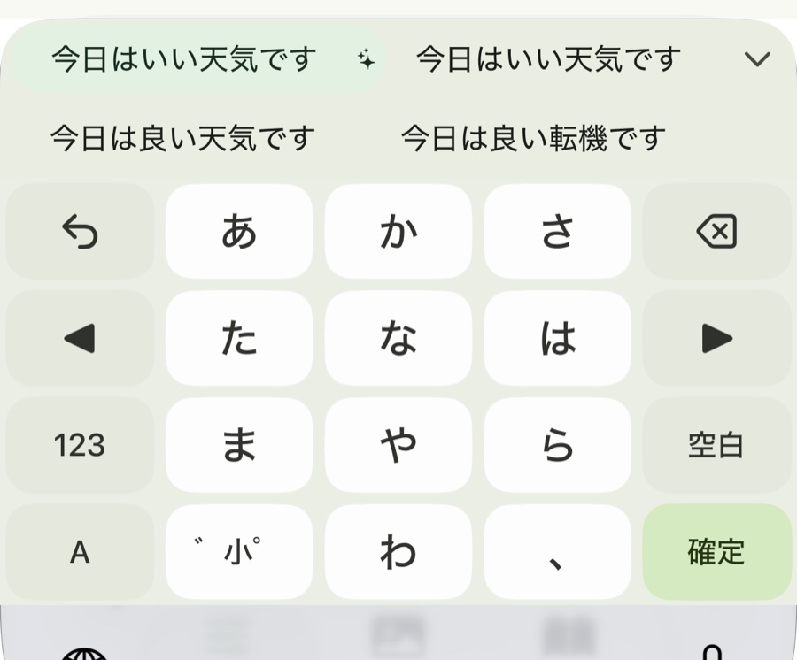

ことばを、
軽やかに。
Kotori は、フリックで打つ日本語キーボードです。指を途中で曲げると、濁音も拗音もひと筆で打てます。変換はすべて端末の中で行い、打ったことばを外へ送りません。
曲げると、濁音も拗音も。
キーを押したまま上下左右へすべらせるのが、ふつうのフリックです。Kotori の拡張フリックは、そこから指を曲げたぶんだけ、打てる文字が増えます。「゛」のキーへ指を運ぶ回数が減ります。
- 右上へ
- が 濁音。半濁音は左上へ
- 左へ行って、下へ曲げる
- ぎ い段・う段・え段・お段の濁音
- 左へ行って、右へ戻す
- きゃ・きゅ・きょ 戻す角度で選びます
- 上へ行って、下へ戻す
- かん ほかに「くう」「けん」「こん」
濁音・拗音・そのほかは、設定で別々に切り替えられます。フリックの広がりと長押しの時間も調整できます。

変換は、端末の中だけで。
かな漢字変換の辞書も、文脈を見て候補を選び直す「AI 超変換」のモデルも、アプリに入っています。通信を待たずに変換でき、圏外でも変わりません。
- 選んだ候補を覚える学習。設定でオフにでき、覚えた語はひとつずつ消せます
- ユーザー辞書と定型文
- かな、英字、数字、記号、絵文字の配列

指先に、好きな景色。
キーボードの背景に、写真や色を敷けます。キーの形は 3 種類から選べ、濃さ、すきま、高さ、位置も変えられます。
- 写真、単色、グラデーションの背景
- Expressive、フラット、透明のキー
- 片手で届くように、左右へ寄せて幅を狭められます
打ったことばは、外へ出しません。
キーボードは、パスワード以外のほとんどすべての入力を目にします。だから Kotori は、入力した内容をどこにも送りません。
iOS 版
通信する機能を持っていません。広告、利用状況の分析、クラッシュレポートのためのプログラムも入っていません。「フルアクセスを許可」は、オンにしなくても入力できます。
Android 版
入力した内容は送信しません。送るのは、同意をいただいた場合のクラッシュレポートだけで、設定でいつでも止められます。広告と、利用状況の分析はありません。
学習した語、ユーザー辞書、設定、背景の画像は、端末の中に保存します。パスワードの入力欄では、候補の表示も学習も行いません。
入手
iOS 版
TestFlight でテスト中です。iOS 17 以降の iPhone と iPad で動きます。
Android 版
公開の準備をしています。Android 12 以降で動きます。
どちらも無料です。お問い合わせは support@yuuki14202028.com まで。